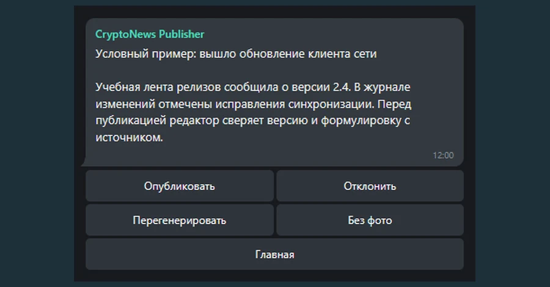

TELEGRAM / АВТОМАТИЗАЦИЯ КОНТЕНТА
CryptoNews Publisher
Для владельца Telegram-канала, который вручную проверяет ленты и пишет посты. Бот собирает материалы из RSS и Telegram, готовит черновик через Gemini и отдаёт его редактору на решение.
В демо создайте черновик, проверьте очередь и подтвердите публикацию. Внешние сервисы отключены.